Fire Soul Strategies -Correction notice-
You can collect Fire Souls during the missions to unlock mini-games in Party Mode as well as hidden characters. You can find some just by playing normally, but there are some that are more difficult to collect. Below is a summary of some of the more hard-to-find Fire Souls.
Sand Oasis (Find King Shahryar)
For the first Fire Soul: When you press the switch pad underneath the iron ball, pillars will appear. They are too high to reach with a normal jump, however, so it’s very difficult to get the Fire Soul without the Splash Jump skill. If you have Splash Jump equipped, do a jump attack toward the pillar to easily grab the Fire Soul.
(Difficulty: medium)
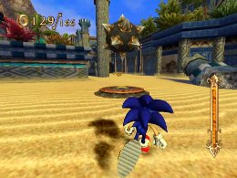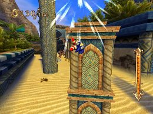
Sand Oasis (Don’t break the jar)
For the first Fire Soul (near the exit back to the outside): The Fire Soul is right above a jar near the middle of the slope. You need to jump to grab it, but the timing is a bit tricky, and hitting the jar will result in mission failure.
While it depends on your speed, it may be easier to grab the ring if you jump from a position relatively close to the jar.
(Difficulty: medium)
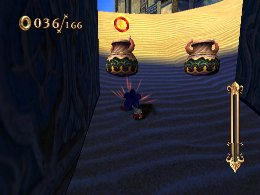
Sand Oasis (Break 5 jars)
For the second Fire Soul (second lap): The Fire Soul is positioned near spike traps, and it may be difficult to grab it without being damaged by the spikes. Using Time Break or Speed Break will make it easier to pick up.
(Difficulty: medium)
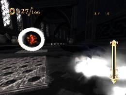
Dinosaur Jungle (Follow the Pterosaur)
For the first Fire Soul (in a cage): You will need to use trampolines to jump higher, but if Sonic’s position is even a little bit off when you do the Homing Attacks, you won’t be able to lock on to the trampolines. You will need to adjust Sonic’s position each time, making this sequence difficult. You can jump higher if you do the Homing Attack at the top of your jump, so try gaining height to give yourself time to adjust.
(Difficulty: high)
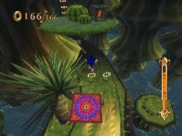
For the second Fire Soul (on the shortcut accessed via the catapult): You need to defeat three Enemies so you can use the catapult, but after you defeat the Enemies, you will need to stop and gauge the right timing to use the catapult. Unless you wait, it’s easy to pass by without even noticing what you need to do. After you defeat the three Enemies, wait, and charge your Charge Jump until the catapult appears.
(Difficult: medium)
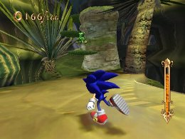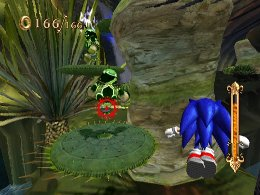
Dinosaur Jungle (Defeat 10 Enemies)
For the second Fire Soul (on the route where you don’t use the Jump Pad): It may be difficult to notice that you need to need to avoid using the Jump Pad and use jump + Jump Dash in order to access this hidden route.
It looks like a speed board, so many players will simply hop on, but it’s important to jump over it instead.
(Difficulty: high)
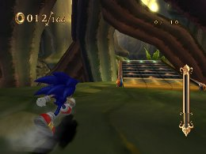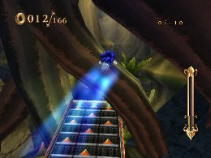
Dinosaur Jungle (Don’t defeat enemies)
For the first Fire Soul (on the route where you don’t use the Air Launcher): When you hop into the first Air Launcher in the mission, wait until the Rings go through a “large small large” cycle, then flick the Wii Remote at “large” to go straight to the dinosaur’s head without using the next Air Launcher. This can be difficult to figure out.
The key here is to determine the size of the Air Launcher, and figure out the right strength so you don’t enter the next Air Launcher.
(Difficulty: medium)
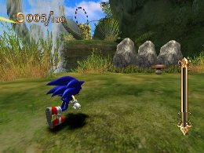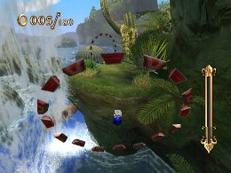
Levitated Ruin (Find Sinbad)
For the second third Fire Soul (placed on a grind): You can pick up the Fire Soul simply by grinding, so that part is easy, but it’s very difficult to avoid taking damage from the obstacles after you collect it. Use Time Break to increase your chances of avoiding damage.
(Difficulty: medium)
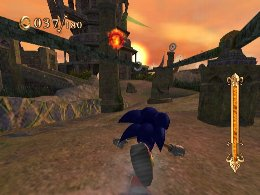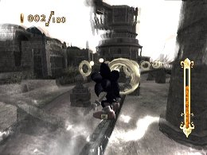
Pirate Storm (Follow the Pirates)
For the second Fire Soul (above a iron ball on a grind rail): To get to the area where the Fire Soul is located, you will need to jump when the catapult is half-cocked, so it may be difficult to figure out.
Once you’re on the grind rail, charge your jump and Jump Dash at the right timing. This can be very difficult, though—tilting the Wii Remote during the grind can send you jumping in the wrong direction, and unless it’s a small jump you’ll pass right through. But if you jump too low, you’ll hit the iron ball. If you get the hang of the catapult power level and start your Charge Jump as soon as you start grinding, you’ll have a little more time to make sure you get the controls right.
(Difficulty: high)
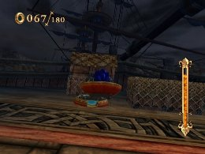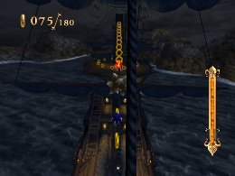
Skeleton Dome (Find King Solomon)
For the third Fire Soul: Take advantage of enemies to get up to the area where the treasure chest is, and use a Time Break near the treasure chest to slow the rotation of the rolling spiked balls ahead. You can then use the Spring to jump. In the cage beyond is a Fire Soul that you can pick up when in Time Break.
Since you will need to use Time Break heavily to get this Fire Soul, make sure to build up energy in the Soul Gauge.
(Difficulty: medium)
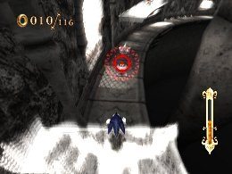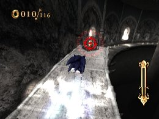
Night Palace (Sneak into the palace)
For the second and third Fire Souls: Both Fire Souls are difficult to get without equipping Slowed Search and using Time Break.
In both cases, you need to use Time Break before the columns are restored, so make sure you build up enough energy in the Soul Gauge beforehand.
The Fire Souls are positioned relatively high up, so the key is to do Homing Attacks on the same obstacles that you can lock on to.
(Difficulty: high)
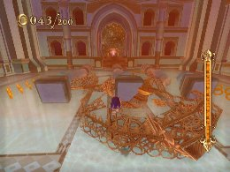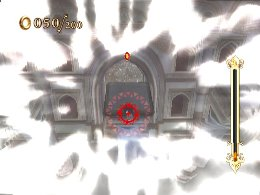
 RSS
RSS